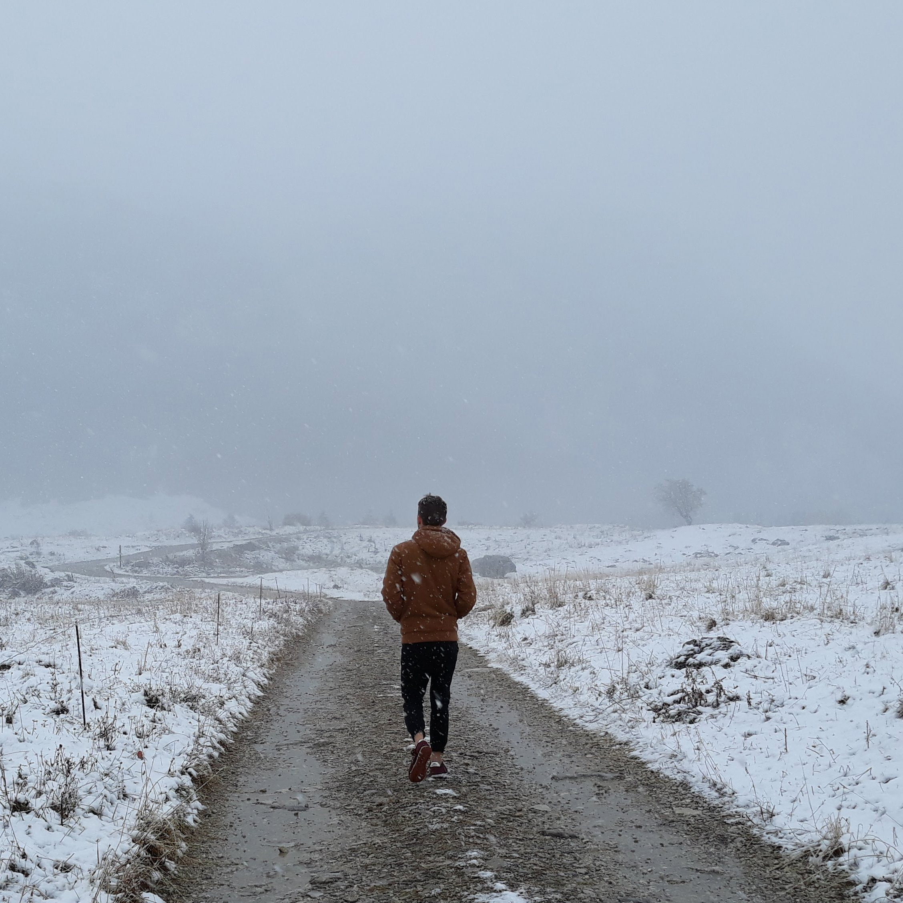
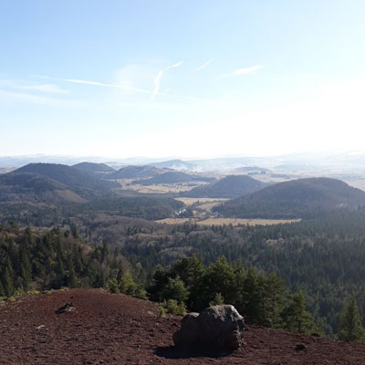

RENNARD Léo
Né le 20 août 1999
Formations Certifiantes
- BAC L spécialité Anglais Renforcé
- CQP Opérateur de Parcours Acrobatique en Hauteur
- Stage d'une semaine sur la méthode AGILE en entreprise par un coach AGILE.
2017 - Lycée Charles Poncet (74)
2019 - Centre de Loisirs de Flaine (74)
2021 - ETPA Montpellier (34)
A propos de moi
Passionné de nature et de jeux vidéos en tout genre, j'ai essayé beaucoup de choses avant de vouloir postuler pour une alternance. Titulaire d'un Bac L, je me suis par la suite inscrit à la Fac en LLCER Anglais. Entre temps j'ai voyagé et travaillé principalement en intérim, en passant la majeure partie de mon temps à photographier la nature et l'environnement. J'aime beaucoup explorer et découvrir, je suis quelqu'un de très curieux et toujours ouvert aux nouvelles expériences quand il s'agit d'apprendre et d'aller vers les autres. Professionnellement, je souhaiterai à terme pouvoir mettre à profit ma rigueur et ma créativité afin de me former dans un métier permettant d'exploiter ces qualités.Expériences Pertinentes
Tout d'abord, j'ai commencé à apprendre avec un guide sur OpenClassrooms de l'époque les bases de l'HTML et un peu de CSS par pure curiosité (à cette période je souhaitais devenir Professeur d'Anglais). Puis je me suis inscrit à l'ETPA Montpellier afin de préparer un Bachelor Conception et Réalisation de Jeux Vidéos. J'y ai appris les bases du Python, du C++, et j'ai pu travailler sur un moteur de jeu (PHASER 3). J'ai aussi commencé à pratiquer un peu sur Codingames, et nous avons pu travailler sur quelques projets en Lua. C'est ici que j'ai vraiment compris quelle était ma vocation. La satisfaction ressentie en fabriquant quelquechose a partir d'un code me fascine, et c'est principalement lors du premier projet abordé à l'école que j'ai découvert que le Web est le domaine qui me conviendrait parfaitement.Pourquoi l'alternance ?
L'ETPA pour moi a été le déclic qui m'a permis de réaliser ce que je souhaite vraiment faire. Cette expérience m'a donné matière à réfléchir. J'estime que ce qui me tient plus à coeur, c'est de pouvoir me garantir une indépendance financière stable en ayant une formation plus professionnalisante, car j'ai envie de m'investir dans ce qui peux contribuer à la réalisation de mon projet. De plus, je suis bien plus impliqué et performant lorsque je touche du concret.


Mes Centres d'Intérêts
Je m'intéresse principalement aux technologies, à l'histoire de l'Art et à la nature. J'apprécie beaucoup visiter et explorer des endroits qui me sont inconnus. J'apprécie la randonnée, surtout en raquettes lors des jours de neige. Je fais aussi du ski alpin.Langues
Français Natif Anglais Courant Espagnol Scolaire
Compétences Humaines
Je suis très autonome, je suis performant en équipe, j'aime rechercher des solutions aux éventuels problèmes (merci StackOverflow), et je n'arrête jamais de vouloir apprendre. Je suis aussi très organisé, lorsque j'ai une tâche à remplir, en préférant être toujours ponctuel.Compétences Techniques
HTML/CSS
Python
C++
Photoshop